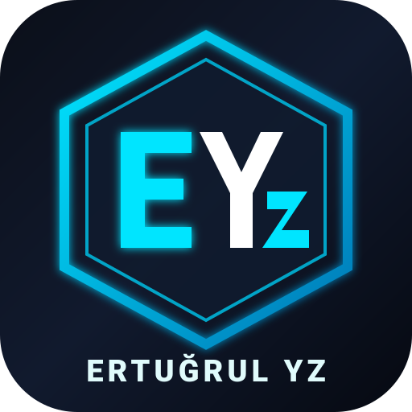

Ertuğrul YZ• Kondisyon & Eşik: Badajoz evinde tam hafta dinlenmiş halde çıksa da 65-70. dakikadan sonra fiziksel temposu düşebilir. Tenerife ise profesyonel lig temposuna sahip ancak Kanarya Adaları'ndan İspanya içlerine 1.500+ km uçuş/yol yorgunluğu taşımaktadır.
• Taktiksel Düzen: Badajoz derin savunma bloğu kurup Aquiles ve Cerro ile kontra arayacak; Tenerife ise kanatlardan (Gerard Valentín) açılan ortalarla Ranos ve Gomis'i topla buluşturmaya odaklanacaktır.